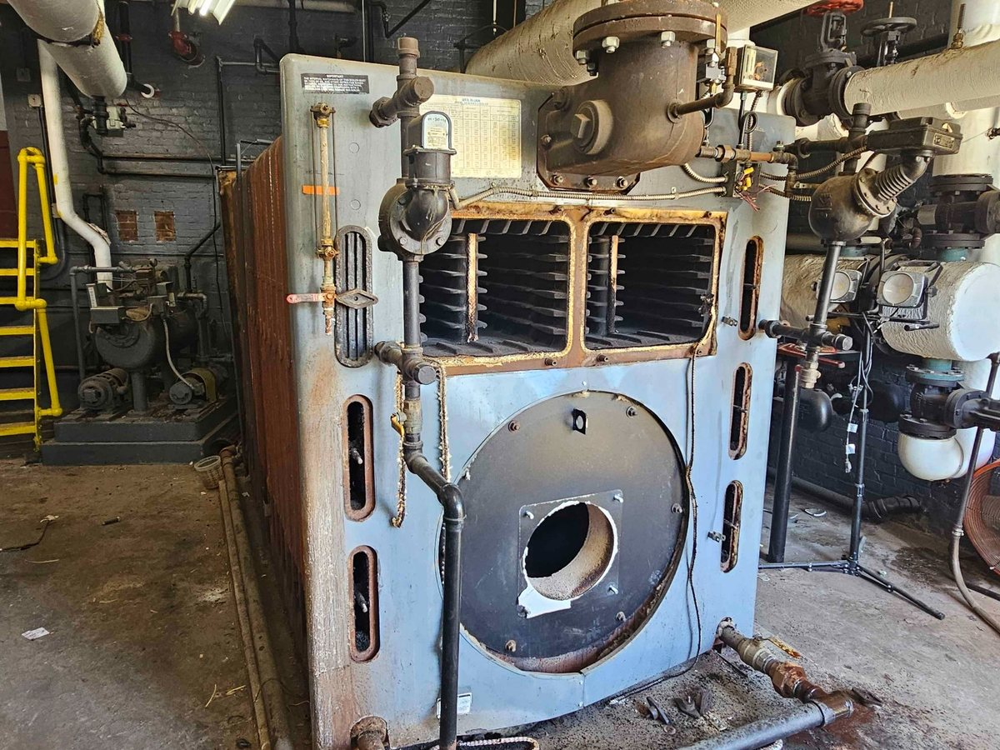
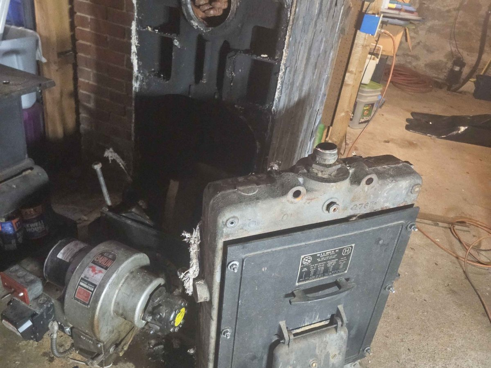

Equipment Removal
Our work
This portfolio highlights the kind of work KBS performs in the field — industrial equipment removal, boiler dismantling, mechanical demolition, and selective interior work.
Portfolio
Your uploaded photos are now built directly into the site. Each card below can still be edited later with a different title, category, or replacement image.





Your project next